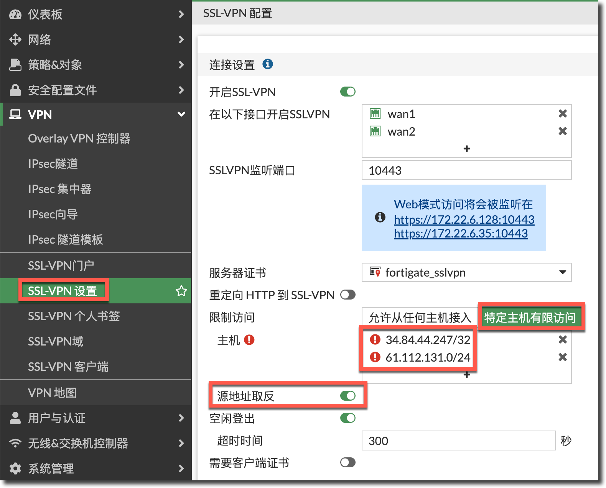

飞塔防火墙
只有在注册以后，才能得到技术支持、产品特性信息、最新威胁防护
Fortigate 配置
浏览器配置
- 通过网线连接
MGMT口或者MGMT 1口 - 将计算机IP 地址设置到同一网段，如：
192.168.1.2/24 - 通过浏览器访问访问<192.168.1.99>
- 登录，用户名
admin、密码为空 - 修改并保存配置
- 通过仪表盘注册设备
局域网管理接口
在视频PNETLab - How to setup Fortinet Firewall Lab with win 10 client , Fortinet internet connectivity .第22 分有演示，注意按下面配置好后，客户端需要通过http 协议才能访问防火墙的Web 服务。
FortiGate-VM64-KVM (port1) # show
config system interface
edit "port1"
set vdom "root"
set ip 192.168.1.1 255.255.255.0
set allowaccess ping https ssh http fgfm
set type physical
set snmp-index 1
next
end终端配置
- 通过
console线连接console接口 - 通过
PuTTY连接COM口
Baud rate: 9600
Data bits: 8
Parity: None
Stop bits: 1
Flow control: None - 按
Enter键进入cli - 通过
admin和空密码登录 - 按
?打开命令提示（同Cisco
iOS 配置
- 下载并启动
FortiExplorer iOS App - 通过USB 线连接手机与防火墙
- 通过用户密码登录
- 修改并保存配置
SFP 收发器
安装
略
移除
略
在NAT 模式下安装FortiGate
防火墙安装于内外网之间，用于隐藏内网IP，并提供NAT 转换。是最为常用的工作模式。
连接设备
将防火墙与服务商提供的网络设备连接。并通过Web 访问防火墙管理界面。
配置接口
- 进入
Network > Interfaces界面，编辑互联网端的接口（如：wan1 - 设置上下行速率（
Estimated Bandwidth - 将接口设置为
WAN - 设置
WAN口地址：静态、动态、PPPoE - 编辑局域网接口，也被叫做内网接口
- 设置
LAN接口角色 - 设置
LAN接口IP，或者启用DHCP - 管理权限：HTTPS、PING、SNMP 等等
添加默认路由
- 进入
Network > Static Routes。一般来说只需要配置一条默认路由； - 设置
Destination为Subnet（以子网匹配）并且IP 为0.0.0.0/0.0.0.0 - 设置网关（ISP 提供），接口为之前设置的
wan1
设置DNS服务（可选
进入Network > DNS 指定DNS 服务器即可。也可以使用默认的FortiGuard DNS服务
创建策略
- 进入
Policy & Objects > IPv4 Policy。设置一条用于流向Internet 的流量策略（名为Internet） - 设置输入端口为
lan、输出端口为wan1，设置源、目的、周期和服务信息 - 设置动作为允许
- 开启
NAT并选择Using Outgoing Interface Address - 启用
Log Allowed Traffic并选择所有会话
结果
- 使用浏览器浏览内网
- 可以通过
FortiView > Traffic From LAN/DMZ > Sources观察流量信息 - 右键
Drill Down to Details查看详情
如果防火墙拥有内置存储并且启用了日志，那么我们可以查看历史日志信息。查看特性-平台矩阵
使用Zones来简化防火墙策略
通过将多个接口加入一个zone可以简化防火墙策略。例如：我们可以创建VLAN10,20,30，并将它们加入名称为LAN的zone。那么我们就可以使用这一个zone来达到分开管理每个vlan 的效果。
除了vlan，zones 嗐可以用来管理物理接口和IPsec 隧道。
创建VLAN
- 进入
Network > Interfaces，选择Create New > Interface - 创建VLAN 接口，并设置VLAN ID 为10，启用DHCP 服务
- 同理创建VLAN 20、VLAN 30
创建zone
- 进入
Network > Interfaces，选择New > Zone - 设置一个名字（如：
LAN Zone），并添加新创建的vlan- 注意：可以选择
Block intra-zone traffic来阻止vlan 间的通信
- 注意：可以选择
创建zone的策略
- 进入
Policy & Objectes > IPv4，创建一条策略：赋予LAN Zone内所有vlan 访问互联网的权限 - 根据需要，设置安全选项（Security Profiles
结果
当有新的vlan 时，只需将vlan 加入zone 就可以应用已创建的策略了。
利用SD-WAN来冗余Internet
SD-WAN 可以无缝管理OSI 模型中的二层流量，而不需要硬件交换机和控制器。
通过基于基于volume的加权平均，我们分配流量wan1：wan2=3：1。当其中一条线路不可用时，将自动将流量转移到另一条线路。
将防火墙接入ISP
按上文步骤，将防火墙的wan1、wan2 口，分别接入两个ISP 网络。
修改现有策略
任何在用的接口都不能被加入到SD-WAN 接口。所以我们必须先删除掉wan1、wan2 上已有的策略。
- 进入
Policy & Objects > IPv4 Policy并删除所有wan1、wan2 上的策略
创建SD-WAN接口
- 进入
Network > SD-WAN - 设置接口状态为
Enable - 在SD-WAN 下，添加两个WAN 口
- 在
Load Balancing Algorithm下，选择基于卷的算法，并配置权重百分比 SD-WAN Usage可以看到使用情况
配置SD-WAN状态检查（可选
- 进入
Network > SD WAN Status Check，选择Create New。可以设置检测方法
允许内网流量通过SD-WAN
- 进入
Policy & Objects > IPv4创建新的策略 - 设置出入端口
- 启用NAT 和安全配置
- 启用日志功能
结果
- 访问互联网，在防火墙
Network > SD-WAN > SD-WAN Usage可以看到使用情况 - 通过
Network > SD-WAN Status Check检测状态 - 通过
Monitor > SD-WAN Monitor显示每个wan 口的使用情况
测试故障转移
就直接拔掉wan1 的线即可。然后还是通过上方的面板去查看结果。
安全框架的安装与认证
略
透明web代理
略
带宽限制与流量整形
略
基于策略的模式
在策略模式下，可以直接将web 和应用添加到策略里面。切换防火墙模式会修改配置文件，需要提前备份配置文件。而且基于策略的模式可能会阻止合法流量。还需要设置Central SNAT策略来配置NAT。
演示阻止Facebook
启用基于策略的模式
- 进入
System > Settings，滚动至System Operation Settings - 选择
Flow-based、Policy-based.以及一个Select an SSL/SSH Inspection配置
创建Central SNAT 策略
- 进入
Policy & Objects > Central SNAT点击创建，并设置：- 入口
- 出口
- 源、目的IP
- 协议
创建IPv4策略
- 进入
Policy & Objects创建策略，设置端口与源、目的地址（默认 - 在应用选项中，选择添加需要的应用
策略表排序
- 进入
Policy & Objects > IPv4 Policy可以查看策略表。一般要将更具体的策略放在顶部 - 直接拖动行就可以了
结果
- 浏览Facebook 打不开
- 查看
FortiView > Threats发现流量被阻止
包捕获
用于流量分析，略
防火墙黑名单
本来SSL VPN 功能上写着可以允许特定区域的IP 访问，但是尝试多次后均未能成功。无意间搜到可以通过IP 限制。
- 首先设置允许特定主机访问：
 - 源地址取反（允许变阻止）：
config vpn ssl settings
set source-address "34.84.44.247/32" "61.112.131.0/24"
set source-address-negate enable
end
记一次内存异常的问题
内存使用率过高，进入保护模式。
- 以为是数据包捕获的问题，后面发现不是，但是内存使用率过高会造成某些GUI 空间不可见；
- 查看内存占用情况
diagnose sys top：
fnbamd 189 S 0.0 34.0 6 # 内存占用34.0，经确认是FortiGate 的认证处理模块
- 联想一直以来的SSL VPN 恶意攻击，于是果断拉黑了一堆IP，然后重启服务
diagnose sys kill 11 189 - 问题解决。